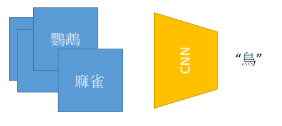
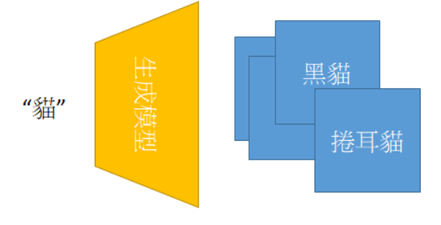
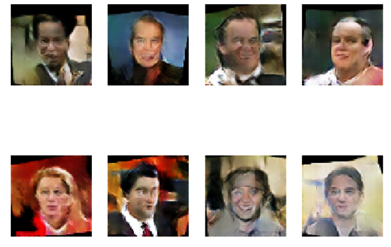

这几年深度学习的流行除了卷积神经网络（Convolutional Neural Networks）外，再来有意思的就是生成对抗网络GAN（Generative Adversarial Network），GAN的概念由Ian Goodfellow在2014年提出[1]，我们甚至可以用两个不同的成语来描述机器学习的两个重要分支判断模型以及生成模型：
在电脑视觉里面的分类问题中，我们想要让电脑知道这张图片是鸟，我们会收集许多关于鸟的资料，例如不同种类的鸟..等，并通过卷积神经网络（Convolutional Neural Networks）让电脑来训练、学习，之后电脑就会分辨出这张图片是不是 “鸟”。
电脑会看了许许多多关于鸟的图片，并归纳出一些规则，来分辨这张图片是不是鸟。

人类可以听到一些关键字，脑海产生对应关键字的图像，所以我们是不是也能让电脑听到关于猫这个字，他就会产生猫的影像呢？答案是肯定的，透过生成模型我们可以让电脑产生相对应的图像。
可能电脑没有看过我家的小猫长啥样，可是既然是猫，所以他应该要有4只脚，一身毛茸茸的毛发......等。

上面的例子示范出我们可以让电脑生成我们感兴趣的图像，可是我们到底要怎么知道这些生成出来的图像是猫而不是老虎呢？所以Ian Goodfellow就提出了除了生成外我们还要给你一个对抗网络。
什么是对抗网络？ 对抗网络换句话说就是想要知道你生成的图像到底像不像猫?如果这个网络在古代就出现的话，指鹿为马这句成语大概就不会传下来了吧...也难怪Yann LeCun曾说：“生成对抗网络是机器学习这十年来最有趣的主意”
原论文也有提出一个有趣的例子，有一个小偷(生成器)要努力印刷出可以骗过警察(判断器)的钞票，而警察(判断器)也要努力学习尽管小偷(生成器)的印刷技术越来越高明，他也要分辨得出来。
接下来我们会示范如何让电脑生成人脸，实作的方法主要是参考Deep Convolutional Generative Adversarial Networks实作一个可以生成人脸的模型，利用随机的乱数通过生成器产生出人脸，并利用判断器分出哪一张是生成的人脸？哪一张是真实的人脸
目标：
判断器: 判断出哪一张是真实世界的人脸?哪一张是生成出来的人脸?
生成器: 需要生成出可以骗过判断器的人脸
如此一来这样这样的训练方法可以让双方学得越来越好，我们可以不要让网络那么的GAN（GANG）让他更PEACE一点，大概是生物课本里面的互益共生。
我们需要准备人脸的资料集，这里使用的是LFW的资料集，下载结束后，并秀出四张图来看看我们的资料集长的怎么样。
from __future__ import print_function
import os
import matplotlib as mpl
import tarfile
import matplotlib.image as mpimg
from matplotlib import pyplot as plt
import mxnet as mx
from mxnet import gluon
from mxnet import ndarray as nd
from mxnet.gluon import nn, utils
from mxnet import autograd
import numpy as np
epochs = 2 # 先設定小一點的方便debug
batch_size = 64
latent_z_size = 100
use_gpu = True
ctx = mx.gpu() if use_gpu else mx.cpu()
lr = 0.0002
beta1 = 0.5
lfw_url = 'http://vis-www.cs.umass.edu/lfw/lfw-deepfunneled.tgz'
data_path = 'lfw_dataset'
if not os.path.exists(data_path):
os.makedirs(data_path)
data_file = utils.download(lfw_url)
with tarfile.open(data_file) as tar:
tar.extractall(path=data_path)
首先，我们将图像缩放到64x64。然后，将像素值归一化到[-1, 1]之间，并秀出图像
target_wd = 64
target_ht = 64
img_list = []
def transform(data, target_wd, target_ht):
# resize to target_wd * target_ht
data = mx.image.imresize(data, target_wd, target_ht)
# transpose from (target_wd, target_ht, 3)
# to (3, target_wd, target_ht)
data = nd.transpose(data, (2,0,1))
# normalize to [-1, 1]
data = data.astype(np.float32)/127.5 - 1
# if image is greyscale, repeat 3 times to get RGB image.
if data.shape[0] == 1:
data = nd.tile(data, (3, 1, 1))
return data.reshape((1,) + data.shape)
for path, _, fnames in os.walk(data_path):
for fname in fnames:
if not fname.endswith('.jpg'):
continue
img = os.path.join(path, fname)
img_arr = mx.image.imread(img)
img_arr = transform(img_arr, target_wd, target_ht)
img_list.append(img_arr)
train_data = mx.io.NDArrayIter(data=nd.concatenate(img_list), batch_size=batch_size)
def visualize(img_arr):
plt.imshow(((img_arr.asnumpy().transpose(1, 2, 0) + 1.0) * 127.5).astype(np.uint8))
plt.axis('off')
for i in range(4):
plt.subplot(1,4,i+1)
visualize(img_list[i + 10][0])
plt.show()
DCGAN的架构核心就是由卷积神经网络（Convolutional Neural Networks）来组成，判断器会经过卷积神经网络不断的缩小特征图的大小，并判断输入的图像是真实图像还是生成的图像。而生成网络会经过upconvolutions，所以特征图会变得越来越大，如此一来可以从低维度的向量变成高维度的的图片。
而在DCGAN这篇论文中又提出几个重点：
1.取消原有的池化层，而在判断器中改用跨步卷积，在生成器中使用微步卷积
2.在判断器和生成器中均使用批量标准化（batch normalization）
3.在判断器取消全连接层(fully connected) 以获得更深的网络结构
4.在生成器中，除了输出层使用Tanh作为激活函数（这里会用tanh主要是因为我们一开始把图像归一化到[-1,1]之间，如果想要是图像归一化到[0,1]之间可以用(sigmoid)替代），其余层均使用RELU激活，在判断器的所有层中均使用LeakyReLu激活。

# 建构生成器
nc = 3
ngf = 64
netG = nn.Sequential()
with netG.name_scope():
# input is Z, going into a convolution
netG.add(nn.Conv2DTranspose(ngf * 8, 4, 1, 0, use_bias=False))
netG.add(nn.BatchNorm())
netG.add(nn.Activation('relu'))
# state size. (ngf*8) x 4 x 4
netG.add(nn.Conv2DTranspose(ngf * 4, 4, 2, 1, use_bias=False))
netG.add(nn.BatchNorm())
netG.add(nn.Activation('relu'))
# state size. (ngf*8) x 8 x 8
netG.add(nn.Conv2DTranspose(ngf * 2, 4, 2, 1, use_bias=False))
netG.add(nn.BatchNorm())
netG.add(nn.Activation('relu'))
# state size. (ngf*8) x 16 x 16
netG.add(nn.Conv2DTranspose(ngf, 4, 2, 1, use_bias=False))
netG.add(nn.BatchNorm())
netG.add(nn.Activation('relu'))
# state size. (ngf*8) x 32 x 32
netG.add(nn.Conv2DTranspose(nc, 4, 2, 1, use_bias=False))
netG.add(nn.Activation('tanh'))
# state size. (nc) x 64 x 64
# 建构判断器
ndf = 64
netD = nn.Sequential()
with netD.name_scope():
# input is (nc) x 64 x 64
netD.add(nn.Conv2D(ndf, 4, 2, 1, use_bias=False))
netD.add(nn.LeakyReLU(0.2))
# state size. (ndf) x 32 x 32
netD.add(nn.Conv2D(ndf * 2, 4, 2, 1, use_bias=False))
netD.add(nn.BatchNorm())
netD.add(nn.LeakyReLU(0.2))
# state size. (ndf) x 16 x 16
netD.add(nn.Conv2D(ndf * 4, 4, 2, 1, use_bias=False))
netD.add(nn.BatchNorm())
netD.add(nn.LeakyReLU(0.2))
# state size. (ndf) x 8 x 8
netD.add(nn.Conv2D(ndf * 8, 4, 2, 1, use_bias=False))
netD.add(nn.BatchNorm())
netD.add(nn.LeakyReLU(0.2))
# state size. (ndf) x 4 x 4
netD.add(nn.Conv2D(1, 4, 1, 0, use_bias=False))
这边利用二元交叉熵当成损失函数，并利用adam演算法来进行优化，我们利用常态分布来初始化网络参数
# 损失函数
loss = gluon.loss.SigmoidBinaryCrossEntropyLoss()
#初始化判断器与生成器
netG.initialize(mx.init.Normal(0.02), ctx=ctx)
netD.initialize(mx.init.Normal(0.02), ctx=ctx)
#优化判断器与生成器
trainerG = gluon.Trainer(netG.collect_params(), 'adam', {'learning_rate': lr, 'beta1': beta1})
trainerD = gluon.Trainer(netD.collect_params(), 'adam', {'learning_rate': lr, 'beta1': beta1})
netG_filename='Generator.params'
netD_filename='discriminator.params'
# load weighting
#netG.load_params(netG_filename)
#netD.load_params(netD_filename)
可以看到我们的生成器慢慢地产生出像脸的影像。
训练分成训练判断器及生成器两个部分
训练判断器：
1.一开始先建立全部都是1及全部都是0的向量，1代表真实的标签，0代表生成的标签
2.真实影像喂入判断器，判断器输出结果与真实标签(1)越接近越好
3.先从随机的Ž喂入我们的生成器，并将生成结果喂入判断器，由于他是生成的影像，所以判断器输出的结果要与生成标签(0)越接近越好
4.调整判断器的参数
训练生成器
1.将随机的Ž喂入我们的生成器，并将生成结果喂入判断器，请记住训练的生成器其所生成的图像是要可以骗过判断器的，所以当生成的结果喂入判断器，我们希望判断器输出的结果要与真实标签(1)越接近越好
from datetime import datetime
import time
import logging
real_label = nd.ones((batch_size,), ctx=ctx)
fake_label = nd.zeros((batch_size,),ctx=ctx)
def facc(label, pred):
pred = pred.ravel()
label = label.ravel()
return ((pred > 0.5) == label).mean()
metric = mx.metric.CustomMetric(facc)
stamp = datetime.now().strftime('%Y_%m_%d-%H_%M')
logging.basicConfig(level=logging.DEBUG)
for epoch in range(epochs):
tic = time.time()
btic = time.time()
train_data.reset()
iter = 0
for batch in train_data:
############################
# (1) Update D network: maximize log(D(x)) + log(1 - D(G(z)))
###########################
data = batch.data[0].as_in_context(ctx)
latent_z = mx.nd.random_normal(0, 1, shape=(batch_size, latent_z_size, 1, 1), ctx=ctx)
with autograd.record():
# train with real image
output = netD(data).reshape((-1, 1))
errD_real = loss(output, real_label)
metric.update([real_label,], [output,])
# train with fake image
fake = netG(latent_z)
output = netD(fake.detach()).reshape((-1, 1))
errD_fake = loss(output, fake_label)
errD = errD_real + errD_fake
errD.backward()
metric.update([fake_label,], [output,])
trainerD.step(batch.data[0].shape[0])
############################
# (2) Update G network: maximize log(D(G(z)))
###########################
with autograd.record():
fake = netG(latent_z)
output = netD(fake).reshape((-1, 1))
errG = loss(output, real_label)
errG.backward()
trainerG.step(batch.data[0].shape[0])
# Print log infomation every ten batches
if iter % 10 == 0:
name, acc = metric.get()
logging.info('speed: {} samples/s'.format(batch_size / (time.time() - btic)))
logging.info('discriminator loss = %f, generator loss = %f, binary training acc = %f at iter %d epoch %d'
%(nd.mean(errD).asscalar(),
nd.mean(errG).asscalar(), acc, iter, epoch))
iter = iter + 1
btic = time.time()
name, acc = metric.get()
metric.reset()
netG.save_params(netG_filename)
netD.save_params(netD_filename)
# logging.info('\nbinary training acc at epoch %d: %s=%f' % (epoch, name, acc))
# logging.info('time: %f' % (time.time() - tic))
# Visualize one generated image for each epoch
# fake_img = fake[0]
# visualize(fake_img)
# plt.show()
num_image = 8
for i in range(num_image):
latent_z = mx.nd.random_normal(0, 1, shape=(1, latent_z_size, 1, 1), ctx=ctx)
img = netG(latent_z)
plt.subplot(2,4,i+1)
visualize(img[0])
plt.show()

1.Generative Adversarial Networks
2.Deep Convolutional Generative Adversarial Networks
3.Wasserstein GAN
4.How to Train a GAN? Tips and tricks to make GANs work